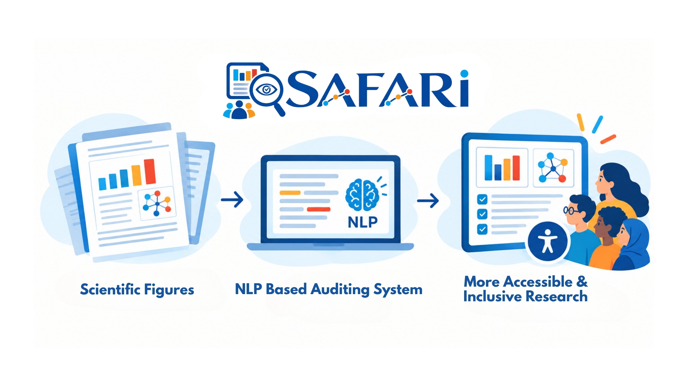
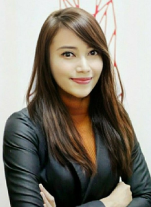

SAFARI Project | Site manager: Panggih Kusuma Ningrum | All Rights Reserved
SAFARI Project is funded by STARS EU, 2026–2027.

Scientific figures play a central role in communicating empirical findings, often condensing complex data and relationships into visual forms that are essential for interpretation. However, for Blind and Low-Vision (BLV) readers, these figures frequently become inaccessible "black boxes" when not accompanied by meaningful textual alternatives. International standards such as Web Content Accessibility Guidelines (WCAG) require non-text content, including scientific figures, to be supplemented with equivalent text alternatives, primarily through alternative text (alt-text) that conveys essential information for screen reader users.
This project aims to develop a computational framework to evaluate the accessibility of figures, to quantify the scientific information density in the metadata and to propose feedback and guidelines for authors. The main objective is to develop an auditing system that determines if a figure is "functionally accessible" for BLV users.
Scientific figures are often the most efficient way to communicate a discovery. A single graph can condense months of experiments into a pattern that a trained eye grasps in seconds. But for blind and low-vision (BLV) readers, that same figure can be a closed door. Without a meaningful textual description, the data it holds remains out of reach, and a central part of the scientific record becomes a black box.
International standards have long recognized this problem. The Web Content Accessibility Guidelines (WCAG) require that non-text content, including scientific figures, be accompanied by equivalent text alternatives, typically in the form of alternative text, or alt-text, that screen readers can convey. In practice, scholarly publishing still falls far short of this expectation, and the gap between what the standards ask for and what readers actually find remains wide.
It is against this backdrop that we are pleased to announce the kickoff of SAFARI (Semantic Audit for Figures and Accessible Research Inclusion) on September 1st, 2026. The project is led by postdoctoral fellow Panggih Kusuma Ningrum, Ph. D., with Prof. Iana Atanassova as Principal Investigator, funded by STARS-EU, and hosted at CRIT, Université Marie & Louis Pasteur, France.
SAFARI will build a computational framework to audit the accessibility of scientific figures. Rather than simply checking whether alt-text exists, it will quantify how much scientific information a figure's textual metadata actually carries, and therefore how much of what a sighted reader gains is available to a screen reader user. The goal is an auditing system that determines whether a figure is "functionally accessible" to BLV readers, moving beyond formal compliance toward genuine usability.
The project also looks toward authors and publishers. By turning audit results into practical feedback and guidelines, SAFARI aims to help researchers write descriptions that serve their readers, and to offer the community an evidence-based way of measuring progress.
Accessibility in science is ultimately a question of who gets to participate in knowledge. With SAFARI, we hope to bring that vision closer, one figure at a time.

Postdoctoral Fellow
CRIT, Université Marie & Louis Pasteur, France
Project Advisory Board
Advisor 1
Project Advisory Board
Advisor 1
Project Advisory Board
Advisor 1
SAFARI Project | Site manager: Panggih Kusuma Ningrum | All Rights Reserved